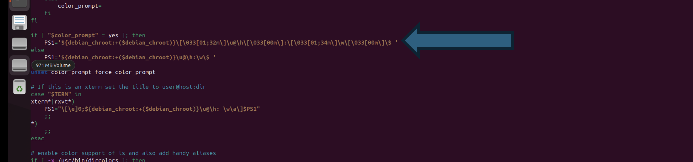
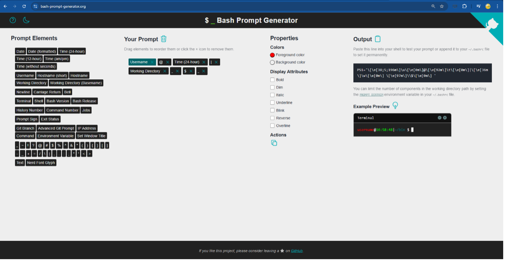

Tout d’abord, il faut ouvrir le fichier bashrc. C’est dedans que l’on va pouvoir modifier le prompt. On utilise la commande nano suivie du chemin du nom du fichier que l’on veut ouvrir :
Il faut trouver dans ce fichier la première ligne du PS1, c’est cette ligne qui faut modifier pour changer le prompt :

Pour personnaliser notre prompt, on a utilisé ce site qui nous donne la syntaxe pour modifier la ligne PS1 avec les éléments que l’on veut ajouter :

On modifie le fichier par la syntaxe donnée par le site et pour enregistrer les modifications au fichier, on doit faire Ctrl+O puis Entrée pour enregistrer et Ctrl+X pour quitter.